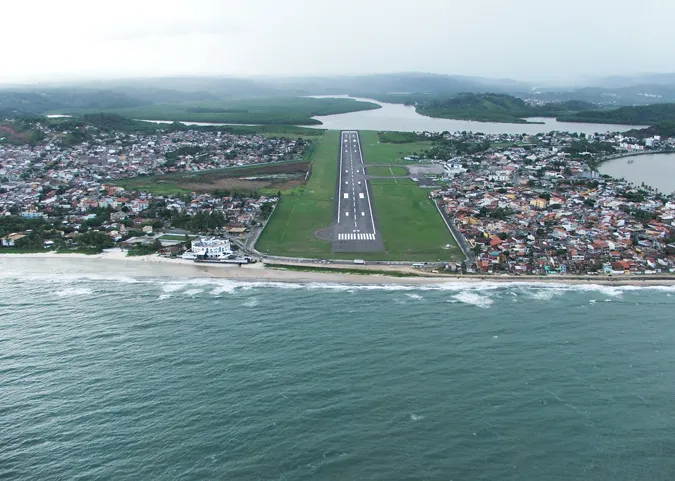

ILHÉUS: A princesinha do sul!
Ilhéus é um município brasileiro do estado da Bahia. Ilhéus foi fundada em 1536 como “Vila de São Jorge dos ilheos”, e elevada a cidade em 1881. É conhecida por ambientar os romances de Jorge Amado, famoso escritor baiano, como Gabriela, Cravo e Canela e Terras do Sem Fim. É considerada a capital do cacau e denominada por seus habitantes como a “Princesinha do Sul”. Sua economia baseia-se na agricultura, turismo e indústrias. Já foi o primeiro produtor de cacau do mundo, mas, depois da enfermidade conhecida como vassoura-de-bruxa, que infestou as plantações, reduziu consideravelmente a sua produção.
Curiosidades sobre Ilhéus-Bahia
Aeroporto Perigoso
Considerado um dos 5 mais perigosos aeroportos do Brasil, O aeródromo tem fama de perigoso por vários motivos, desde uma pista curta de apenas 1577 metros, que em dia chuvosos fica extremamente derrapante, ainda há obstáculos como pássaros na aproximação.
Saiba MaisProdução cacaueira
Não fosse a bem-sucedida introdução dos cacaueiros na região de Ilhéus no século 18, não haveria o ciclo do cacau da Bahia nem motivos para inspirar Jorge Amado a escrever Gabriela, Cravo e Canela.
Saiba MaisMaior litoral da Bahia
Não é só o cacau nem o legado de Jorge Amado que garantem a boa fama de Ilhéus. O município do sul da Bahia é uma ótima opção para quem quer curtir dias de descanso — afinal, com o litoral mais extenso do estado, são quase 100km, balneários não lhe faltam.
Saiba Mais